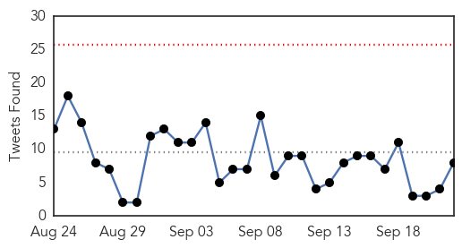

30 Day Trends
Web: 0 alerts, 0 warnings
Twitter: 0 alerts, 0 warnings
Top Articles:
- 1.000
- Some health experts say the USA hasn't learned key lessons from Ebola experience
- 1.000
- Ebola more complicated than many doctors realized
- 1.000
- Errors plagued aid workers during Ebola epidemic
- 0.999
- Year of airport screening doesn't catch Ebola
- 0.998
- Consolidated Support for Liberia's Recovery
- 0.998
- Rapid Response to New Ebola Infection in Sierra Leone
- 0.996
- Bungling by UN agency hurt Ebola response
- 0.992
- Google Science Fair Teen Winner Created a Simple Way to Detect Ebola
- 0.991
- Bungling by UN agency hurt Ebola response
- 0.987
- Ebola: ‘Singing the Oxygen Song'
- 0.978
- Investigation finds more evidence of World Health Organization mismanagement of Ebola crisis
- 0.974
- Extensive airport screening to end for Liberian passengers
- 0.971
- Liberia Gets New Public Health Center
- 0.970
- WHO errors undermines fight against Ebola in Kenema « Awoko Newspaper
- 0.967
- AP Investigation: Bungling by UN agency hurt Ebola response
- 0.967
- “Relax Harsh Restrictions,” AFDB President Urges Investors In Liberia
- 0.960
- Bungling by U.N. Agency Hurt Ebola Response
- 0.960
- Bungling by UN agency hurt Ebola response
- 0.954
- More optimism on Ebola situation today
- 0.954
- Liberia Dedicates U$6M Emergency Operating Center
- 0.939
- Sexually transmitted Ebola and other hot topics in the world of STIs
- 0.921
- Nigeria is working on Ebola drug -NIPRD DG
- 0.911
- EVD Outbreak, its effect to the environment - Sierra Leone
- 0.887
- US doctor beats Ebola, will leave hospital
- 0.886
- New Report Finds World Health Organization's Errors, Incompetence Cost Lives During Ebola Outbreak
- 0.885
- 284 Communities at the Epicenter of the Ebola Outbreak Remained Ebola-Free - How Did That Happen? What Can We Learn from Them?
- 0.758
- Sierra Leone: UNFPA Provides Critical Response to Humanitarian Situation Caused by Torrential Rains and Floods in Freetown - Sierra Leone
- 0.745
- Millennium Challenge Corporation approves $300 million for Liberia and Sierra Leone
- 0.672
- Ebola nurse from Blantyre Health Centre speaks about her time in Africa
- 0.638
- Talk: Dr. Javid Abdelmoneim at Trinity College, Dublin, September 24th
- 0.598
- The student who fought Ebola fear with facts and plantain
- 0.595
- Haiz, is KILLING dogs the only way to stop rabies in Malaysia? [UPDATE]
- 0.584
- United Nations World Food Programme - Fighting Hunger Worldwide
Top Tweets:
- 0.975
- Ebola Virus Disease and ForestFragmentation in Africa Deforestation http://t.co/TJEdIKfJK8
- 0.974
- Maladie à virus Ebola et fragmentationdesforêts en Afrique déforestation http://t.co/SUl52Q7yJg
- 0.967
- 284 Communities at the Epicenter of the Ebola Outbreak Remained Ebola-Free ... - Huffington Post http://t.co/JGH9WYeuQa ebola EVD
- 0.918
- Bungling by UN agency hurt Ebola response - News24 http://t.co/l71AHRdUaE ebola EVD
- 0.912
- US Government Allocates $38Mln for Developing Ebola Cure - Sputnik International http://t.co/4qsrskoIl8 ebola EVD
- 0.893
- AP Investigation: Bungling by UN agency hurt Ebola response - Newsday http://t.co/7OZPt2FnbK ebola EVD
- 0.872
- Avoidable errors undermined efforts to curtail Ebola - Dubuque Telegraph Herald http://t.co/yyu0yYBlF3 ebola EVD
- 0.838
- AP Investigation: Too few body bags and bad chlorine marred WHO Ebola response ... - Minneapolis S... http://t.co/KA7qvuhspF ebola EVD
- 0.792
- Year of airport screening doesn't catch Ebola - USA TODAY http://t.co/VfAdOVHpG2 ebola EVD
- 0.688
- Bungling by UN agency hurt Ebola response - http://t.co/CC7RGwJWiR http://t.co/BqnVF2D4AT ebola EVD
- 0.619
- WHO missteps hurt Ebola response http://t.co/6PiidjUWJw
- 0.606
- 'No Concern' - US Envoy On Misuse of Ebola Donations - http://t.co/NaiI6Jl8yj http://t.co/nOFuSVnbT1 ebola EVD
- 0.598
- Inovio Gets Grant for Ebola Drugs, Regeneron Inks Deal - http://t.co/dHKFn8tP29 http://t.co/QHK2sgjytF ebola EVD
- 0.597
- The Global Response to Ebola MSF http://t.co/euQ6AIce9C
- 0.575
- .@BU_Tweets doctor raises funds 4 Sierra Leonean doctors who went unpaid during the Ebola crisis http://t.co/81maegTPjf
- 0.564
- The Ebola crisis led to many unintended challenges including thousands of unregistered births in Liberia http://t.co/tHE1yhjNOm
- 0.561
- Tango Sensitises Stakeholders On Hand Washing, Ebola Prevention - http://t.co/NaiI6Jl8yj http://t.co/pon4RS6b1A ebola EVD
- 0.550
- Ebola Response in SierraLeone - LessonsLearned http://t.co/tIhJOLJ6WA
Web/News Articles

Tweets
Article Locations

Article Confidences